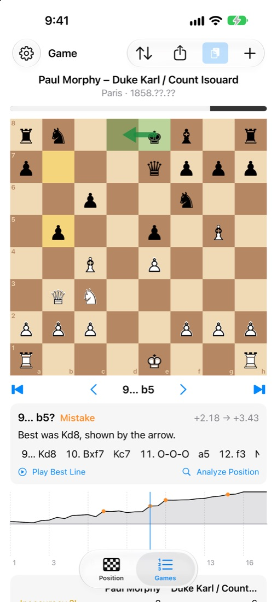

Your chess games, analysed on your phone.
A strong chess engine on iPhone and iPad that finds your inaccuracies, mistakes and blunders and shows the better move. Bring games in from PGN files or printed pages, and positions from diagrams or a board on the table. No account, no subscription, no ads: everything runs on your device.



Analyse
Whole games
Analyze Game searches every position and marks each move as an inaccuracy, mistake or blunder by what it loses against the engine's best move. An arrow shows the better move.
See why
An evaluation graph across the game, a summary per player with average loss, and the engine's line played through on the board.
Any position
Set up a position, paste a FEN, or jump in from any move of a game: score, best move and the main line, updating as the engine searches.
Annotated PGN
Share the analysed game as PGN with evaluations, symbols and the better moves as variations, for any chess program.
Bring games and positions in
PGN
Open .pgn files from Files, Mail or the share sheet, or paste or type a game.
Printed games
Scan a book or magazine page with the camera, or use a photo or screenshot. The moves are read on the device and checked for legality; guesses are shown for you to confirm.
Diagrams
Photograph or screenshot a diagram from a book, magazine or website, and the position appears on the board, ready to analyse.
Real boards
Take a photo of a board on the table, or hold the phone over it with the live camera, and the pieces are read into a position you can check and correct.
Printed games and diagrams read reliably. Reading a real board is newer and the results vary with the set, the light and the angle: it works best with a Staunton set, seen from White's side and from above, with the whole board in view. Every square can be corrected, and the board's corners set by hand. It improves with each update.
Private and open
Chess Analyzer doesn't use the internet at all: no account, no analytics, no advertising, no tracking. Games, photos and settings stay on your device (privacy policy).
The app is free software under the GNU General Public License v3. Its engine, Creatica AB, uses Stockfish's NNUE evaluation. Source code: the app and the engine.
Looking for the Windows program? Creatica Chess Game Analyzer for Windows.